This project was created as part of an assignment from my study. As students, we had the freedom of creating a product of our choosing over a period of 5 months, but the project had to be approved by the teachers to determine whether it would provide tangible growth in our skills. Once a month we held mandatory, graded progress presentations in front of the teachers, and every two weeks we met with our designated teachers for guidance and feedback.
Responsibilities
Research
Documentation
Prototyping
Testing
Asset creation and assembly
Scripting
Sound design
Sound implementation
Problems faced
Creating believable and engaging monster AI was one of the biggest challenges during development.
This was my first attempt at designing horror-focused enemy behaviour, making it difficult to create a sense of unpredictability and tension.
The initial design relied on a simple NavMesh patrol system combined with a death animation triggered when the player generated too much noise.
To simulate noise, a sphere collider attached to the player rapidly expanded and contracted, with its maximum size increasing based on the player's movement speed.
The monster used a sphere collider as a hearing range, detecting the player's noise when the colliders overlapped multiple times.
While functional, the system lacked a gradual build-up to the monster encounter, making the scare feel sudden and predictable.
The limited number of available animations also reduced the impact of the death sequence.
How the problems were solved
Refined and polished the monster's patrol behaviour to make its movements feel more natural and less predictable.
Added audio cues to signal the monster's presence and increase tension before an encounter.
Used sound design to compensate for the lack of animations and create a stronger horror atmosphere.
Improved the pacing of encounters by building suspense before the player was caught.
Conducted peer testing to gather feedback on the effectiveness of the horror elements.
Used the feedback to further refine the monster's behaviour and overall player experience.
Gallery
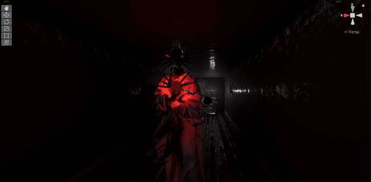
First iteration of the enemy in my audio-based horror game.
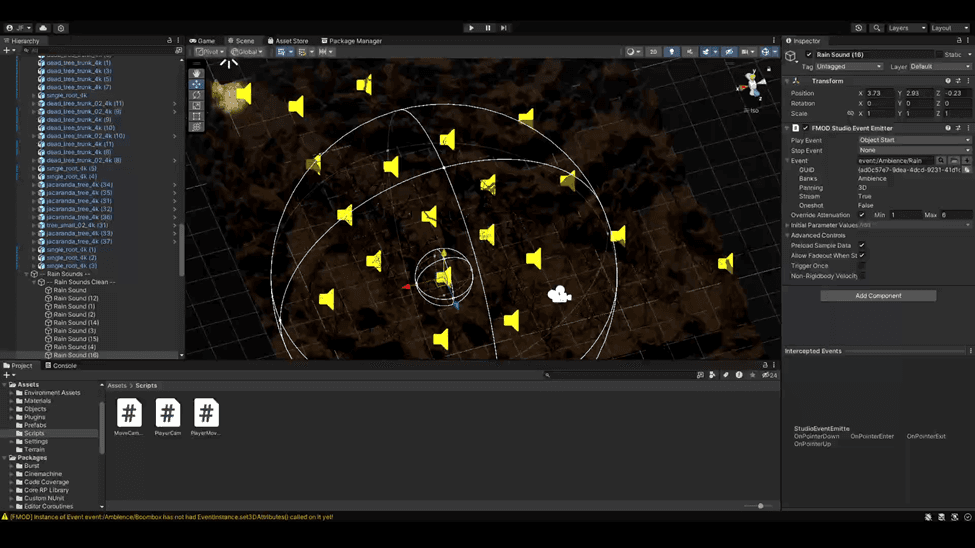
How the audio system was set up inside the forest, in engine.
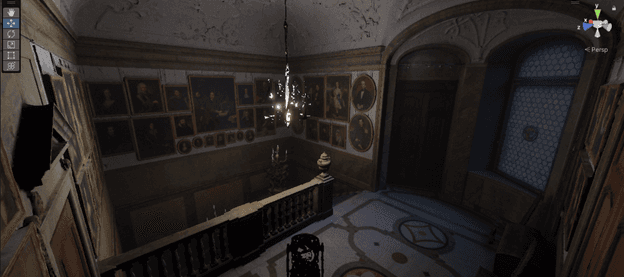
The final environment implemented in the game.
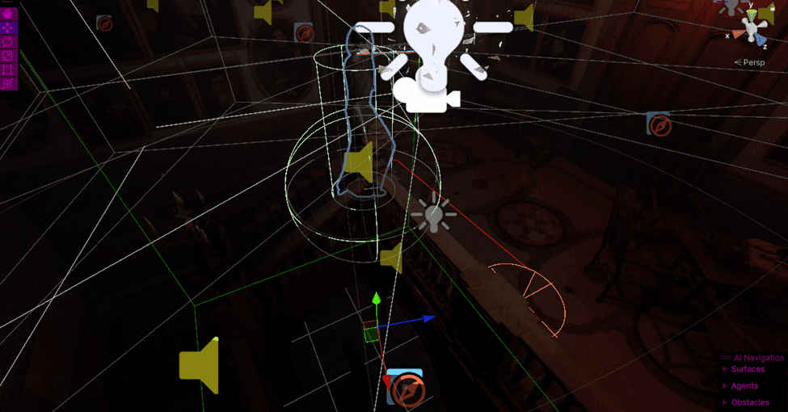
Technical setup of the enemy in engine, with its final behaviour and sound setup.
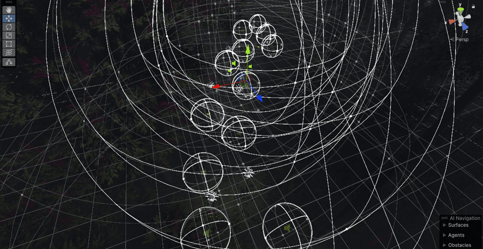
Final audio setup of the outside environment. The spheres show the audible area of each sound.
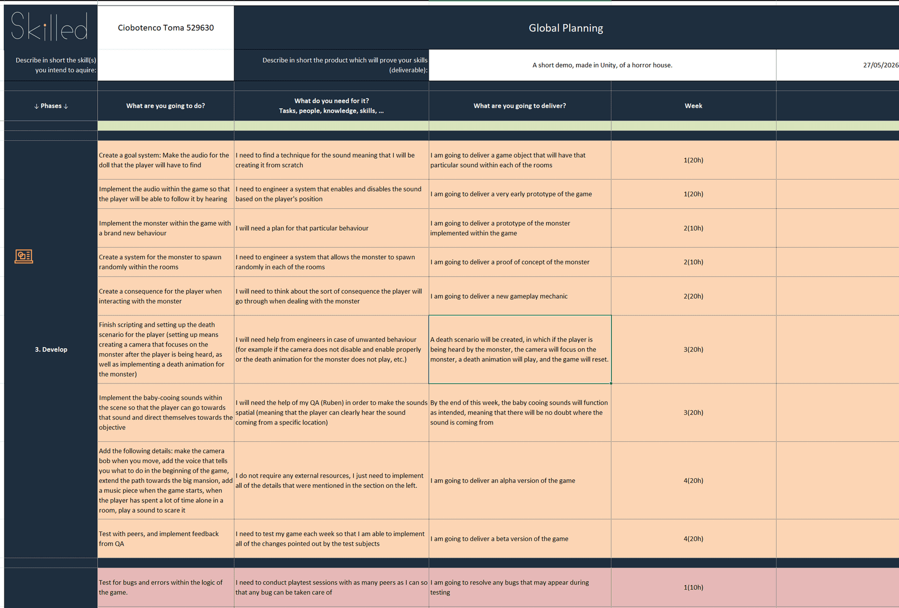
Project planning document.
3.2 Monsters Brought to Life
A game delivered in 8 weeks for a real client, bringing monsters drawn by primary school children to life in 3D. Shown at an exposition at Concordia Theater in Enschede.
This project was part of a university assignment in which we had to deliver a finished game within 8 weeks. It was the first project in which we, the students, worked with a real client provided by our institution. The challenge was incorporating characters designed and drawn by primary school students. Throughout the project we gave bi-weekly presentations to justify our progress and receive feedback from our teachers. At the end, we showed our game at an exposition held at Concordia Theater in Enschede, where the primary school students who designed the characters could play the games that contained their concepts.
Responsibilities
Created and implemented sound effects for the game
Designed and prototyped game levels
Developed multiple level blockouts and gameplay concepts with the second designer
Balanced monster abilities based on ideas provided by elementary school students
Helped create engaging and fun platforming challenges
Assisted engineers with development tasks when needed
Collaborated closely with the design team throughout development
Problems faced
Designing mini-games that complemented the monsters provided for the project was a significant challenge.
The team had limited experience developing games for the target age group, making it difficult to determine what types of gameplay would be both appropriate and engaging.
During the design process, the team initially overscoped the project by creating mechanics and mini-games that added complexity without contributing meaningful value.
Some planned stages and features shifted focus away from the primary objective: bringing the children's monster designs to life within a 3D environment.
How the problems were solved
Reviewed the project's scope and identified stages and mini-games that were too difficult for the target audience or not relevant to the core concept.
Removed mechanics and gameplay elements that did not directly support the project's goals.
Refocused development on the central feature: showcasing the children's monster creations within a 3D space.
Prioritised the visual presentation and integration of the monsters over additional gameplay systems.
Streamlined the experience so development resources went to the aspects that provided the greatest value.
Gallery
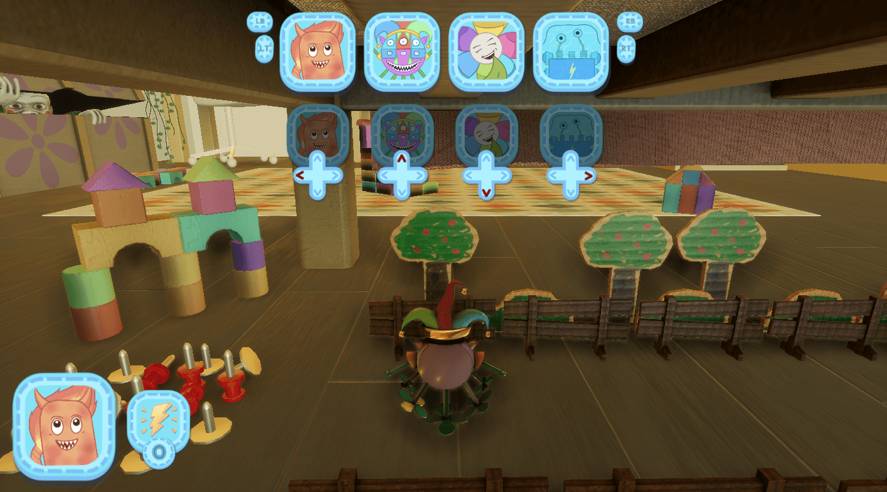
The first level, where you play as a monster with electric powers.
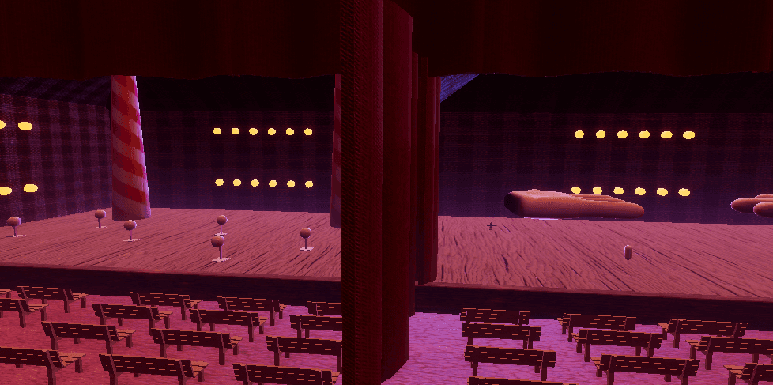
In-engine screenshot of an important level in the game.
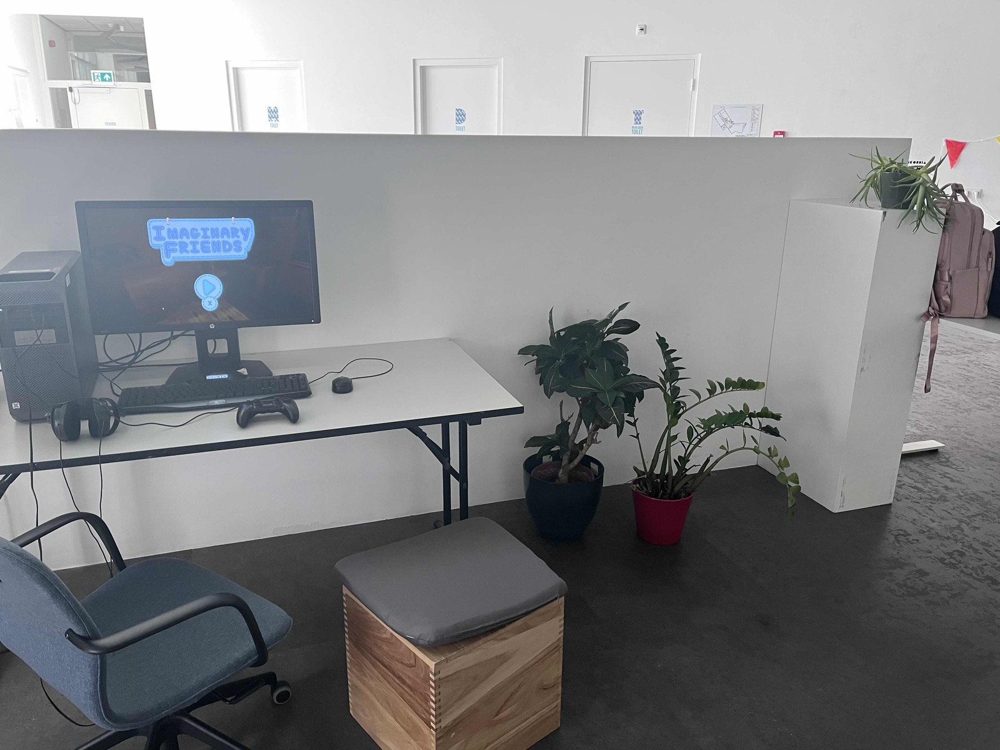
Our team's booth at the showcase event.
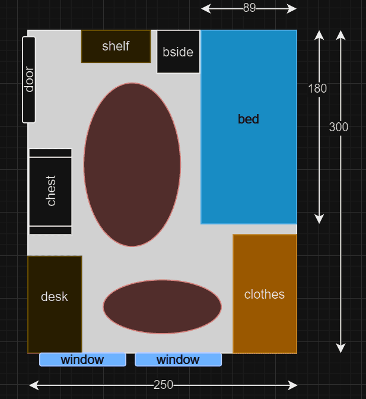
Level layout sketch.
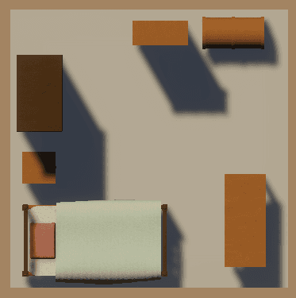
Level blockout seen from above.
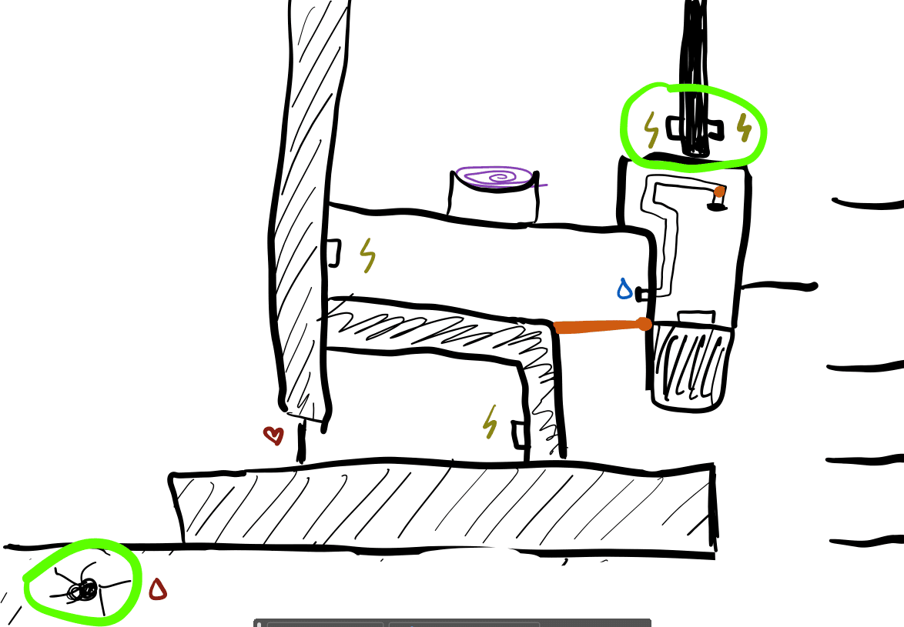
Level design sketch.
3.3 Audio Driven Engagement For Stadiums
Research-driven audio interventions and mini-games designed to calm football crowds before tension escalates, commissioned by Saxion's Ambient Intelligence Research Group.
In my final year of university, I collaborated on a project commissioned by the Ambient Intelligence Research Group at Saxion to develop interactive "audio interventions" aimed at influencing crowd behaviour during live sporting events. The project focused on designing engaging mini-games and producing adaptive audio experiences intended to regulate the mood and energy of supporters in situations where crowd behaviour could escalate negatively. It combined game design, user experience and applied research within the field of ambient intelligence.
Responsibilities
Designed and developed interactive mini-game concepts for crowd engagement
Created and implemented audio content for the audio interventions
Collaborated with team members on gameplay and user experience design
Contributed to research-driven design focused on influencing crowd behaviour through sound and interaction
Assisted in prototyping and testing interactive experiences
Helped explore the application of game design within ambient intelligence research
Problems faced
Conducting sufficient research for the assignment was a significant challenge.
The objective was to reduce undesirable behaviour during football matches through sound and gamification techniques.
A major difficulty was finding credible evidence of measurable behavioural change in football spectators through sound alone.
Existing stadium safety measures and crowd-management procedures are already highly developed and widely used.
Finding opportunities to improve audience behaviour with sound-based interventions alone therefore required extensive research and experimentation.
How the problems were solved
Investigated cultural and historical examples of sound being used to influence human behaviour and emotional states.
Identified the ritualistic use of sound within Tibetan culture as a relevant case study.
Examined how the sounds of traditional Tibetan instruments have been associated with focus, calmness and behavioural regulation.
Used these findings as the foundation for the project's sound design strategy.
Replicated the compositional characteristics and atmospheric qualities of these sounds to encourage a positive response from spectators.
Developed a sound-based solution that met the project's objectives while staying grounded in existing behavioural and cultural studies.
Gallery
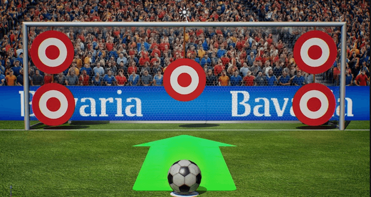
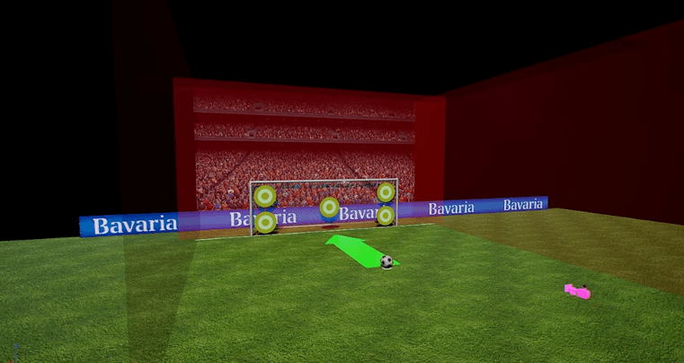
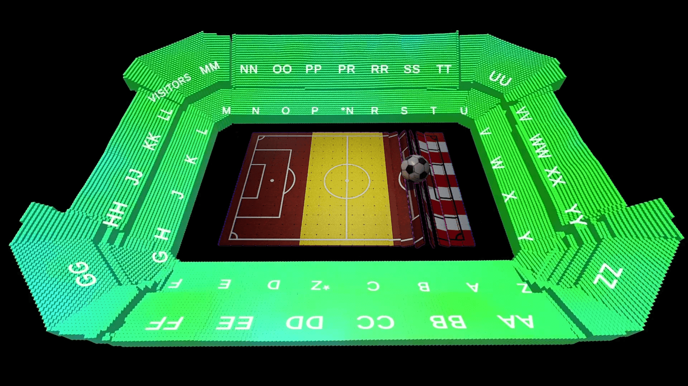
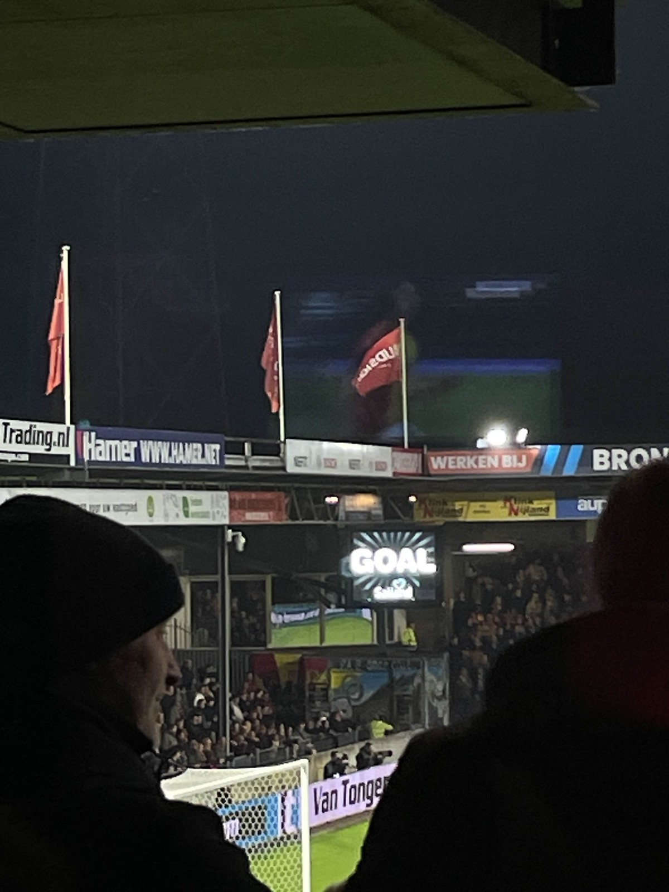
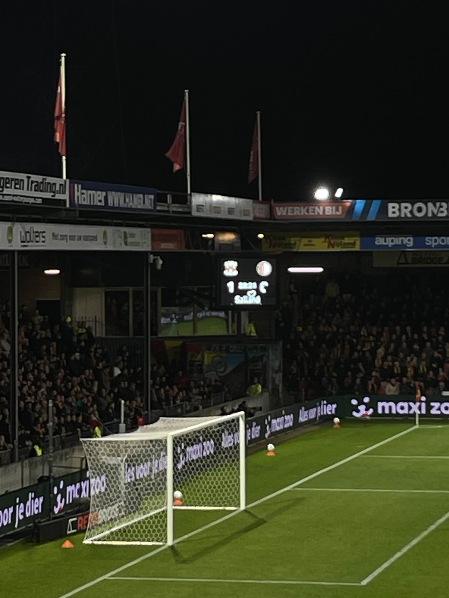
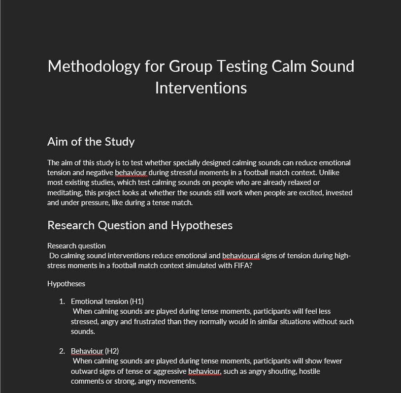
3.4 VR Dementia Awareness Experience
A VR experience where you talk in real time with an AI character living with dementia. I built its soundscape and an adaptive music system that follows the character's mood.
My responsibility within this project was to create an immersive soundscape for a VR experience meant to raise awareness of dementia symptoms and how to handle them if the user were faced with this situation. I created the ambience of the prototype from source material I recorded and processed myself.
Our prototype uses an AI agent that the user can talk to in real time, acting as a person living with dementia. The model responds to the user's speech and also outputs emotions as values, which we use to change the experience visually and audibly. The colour palette changes based on these values, and I built an interactive music system that plays and combines different songs based on the character's mood value. I also recorded the source material used to clone the real voice of a woman for the AI's output.
Problems faced
Creating interactive music for the prototype presented several technical and creative challenges.
Implementing music that dynamically responds to player actions was new to me, as earlier projects mainly used linear, deterministic music systems.
Ensuring seamless transitions between multiple music tracks proved particularly challenging.
The non-deterministic nature of the prototype required music that could blend naturally under varying conditions without disrupting the experience.
Any inconsistency in tempo, key or timbre could cause noticeable, jarring transitions between tracks.
How the problems were solved
Adopted a composition approach designed for interactive and adaptive music systems.
Ensured all tracks shared compatible tempos, keys and timbres for smooth transitions and blending.
Planned the composition process from the outset to keep all tracks consistent.
Considered technical implementation during composition rather than as a separate task.
Established a cohesive musical framework so tracks transition seamlessly in any gameplay condition.
Recognised that changing one track could affect the whole system, which led to a more structured approach to production and iteration.
Gallery
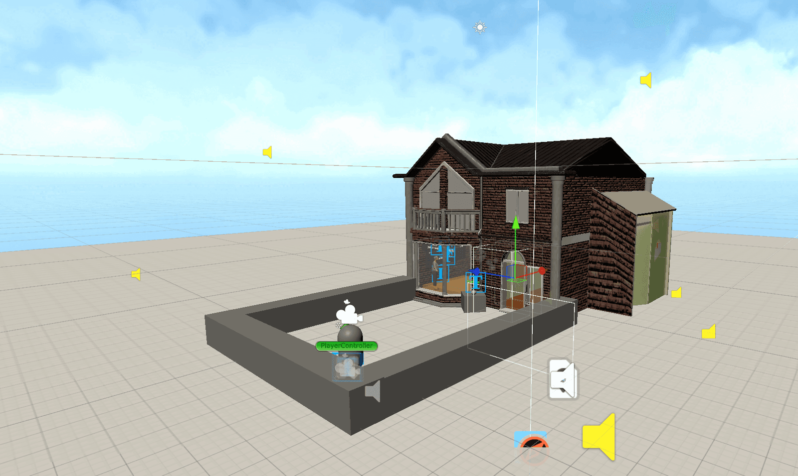
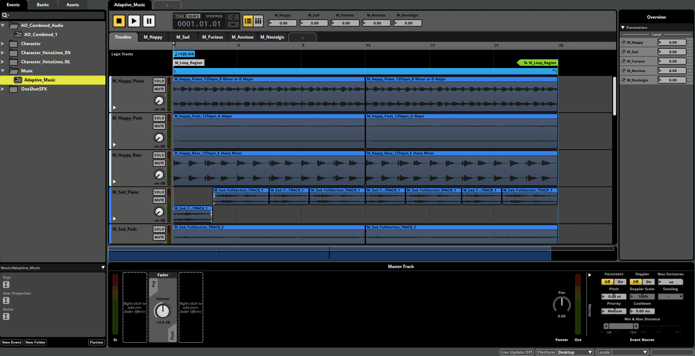
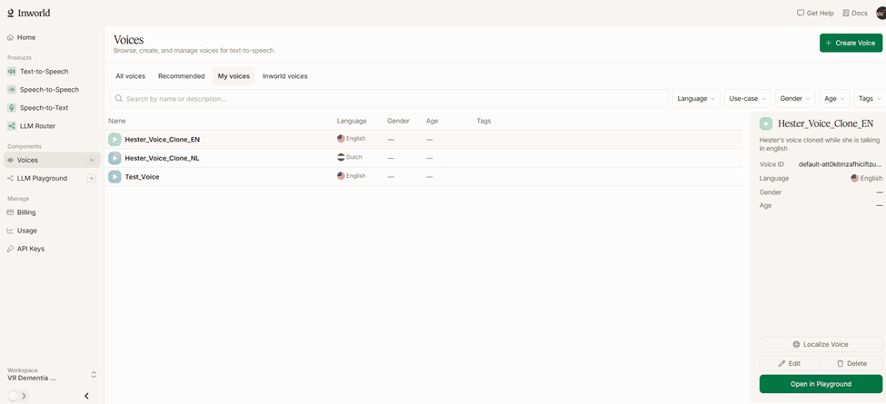
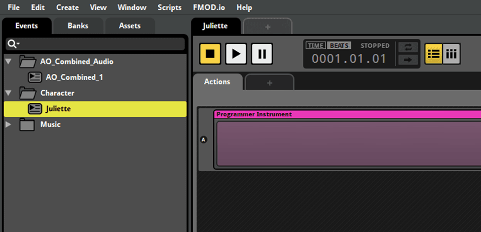
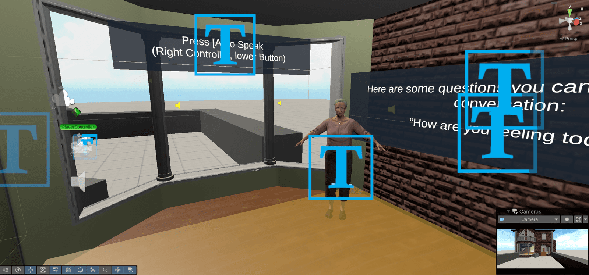
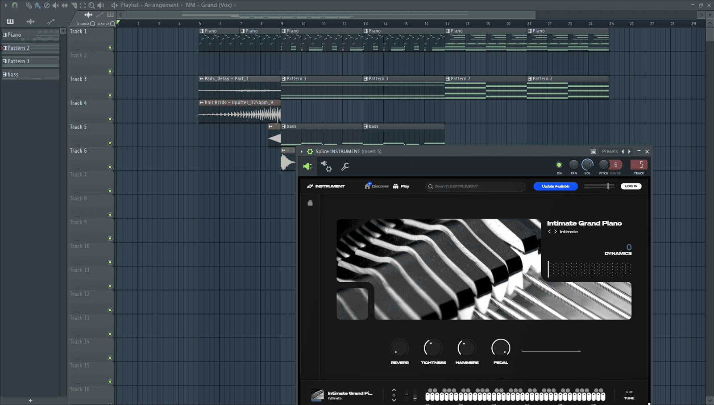
4.Videos
All project videos in one place. Each one opens on YouTube.
I am a reliable and detail-oriented designer who enjoys building interactive systems and refining player experiences.
My work often combines technical implementation with sound design, allowing me to create more immersive and responsive gameplay.
I work in a structured and calm way, which helps me stay focused under pressure and consistently deliver high-quality results. I am always looking to improve my skills and learn new tools that support the development process.